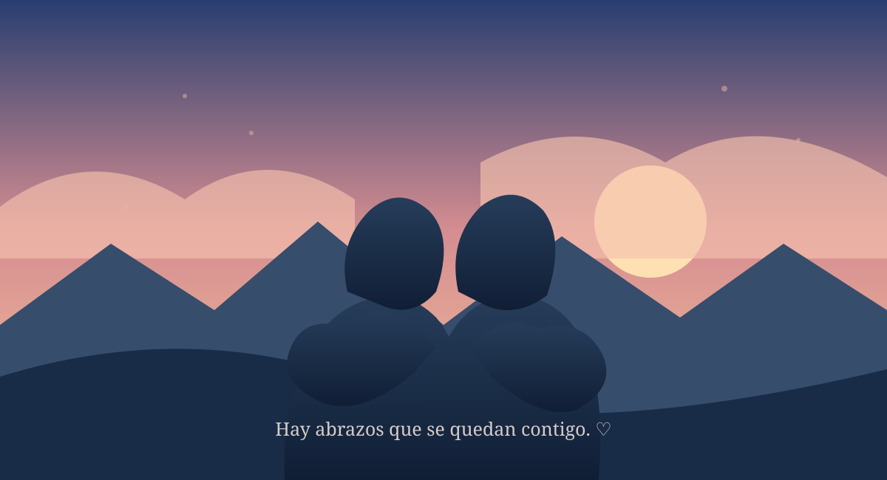

Aquel abrazo
Antes de que dejáramos de hablar, compartimos ese último abrazo que hoy guardo de una manera muy especial.
ESTE LUGAR ES PARA TI
Quiero contarte algunas cosas que a veces no sé cómo decirte.
Quiero enseñarte algo ↓01 · LO QUE SIGNIFICAS PARA MÍ
Viejito, quiero que sepas que eres una persona muy importante para mí. Me gusta saber que puedo acudir a ti cuando necesito un consejo, cuando quiero desahogarme o cuando simplemente necesito escapar un ratito de todo lo que pasa a mi alrededor.
Gracias por escucharme, por leer mis cincuenta mensajes cuando me da por contártelo todo y por encontrar aunque sea cinco minutos para estar. También me gusta que me cuentes tus cosas, porque quiero que sepas que conmigo también tienes un espacio para hablar y ser escuchado.
No siempre tenemos que tener las palabras correctas. A veces basta con saber que podemos buscarnos.
Gracias por leer hasta el último mensaje, incluso cuando parece que nunca voy a terminar de hablar. ♡
Tantos mensajes y todavía me quedan cosas por contarte.
Aunque estemos lejos...
seguimos encontrando la manera de acompañarnos.
02 · A PESAR DE LA DISTANCIA
A veces nuestros días están llenos y no siempre tenemos todo el tiempo que quisiéramos. Pero valoro muchísimo que, incluso cuando solamente tienes unos minutos libres, encuentres un momento para escucharme.
Me importa lo que te pasa, cómo te sientes y todo eso que a veces decides contarme. No quiero que sientas que solamente puedes venir conmigo cuando todo está bien. También quiero estar para escucharte cuando necesites hablar.
Me gusta que podamos ser ese espacio seguro el uno para el otro.
03 · UN RECUERDO QUE GUARDO CON CARIÑO
Hay recuerdos que toman un significado todavía más grande cuando, tiempo después, conocemos lo que la otra persona sintió.

Antes de que dejáramos de hablar, compartimos ese último abrazo que hoy guardo de una manera muy especial.
Después vino la distancia y el silencio. Cada quien tuvo que vivir ese tiempo a su manera.
Rompimos el contacto cero y poco a poco volvimos a encontrarnos en nuestras conversaciones.
Después me dijiste que en aquel abrazo te sentiste muy seguro, que por un momento te olvidaste de todo. Quizá no sabías cuánto significaría para mí conocer eso.
Me alegra que, aunque haya sido por un momento, mis brazos también hayan podido ser un lugar seguro para ti. ♡
04 · YO SÍ QUIERO INTENTARLO
Entonces yo sí quiero luchar por nosotros.
No porque nuestra amistad sea perfecta, sino porque para mí vale muchísimo la pena.
No quiero luchar por una amistad que solamente yo quiera conservar. Quiero que, si tú también deseas seguir teniéndome en tu vida, sepas que yo todavía tengo muchísimas ganas de estar en la tuya.
No quiero obligarte a quedarte ni pedirte que sientas algo que no nace de ti. Quiero que los dos podamos elegir esta amistad, cuidarla y poner de nuestra parte porque nos hace bien tenernos.
05 · LO QUE TODAVÍA NOS ESPERA
Más conversaciones sin mirar el reloj.
Más risas y momentos que después recordemos.
Más confianza para contarnos lo que nos pasa.
Más abrazos cuando la distancia nos deje.
Más oportunidades para conocernos y entendernos.
No necesito saber exactamente cómo será el futuro. Me basta con saber que, si los dos queremos, todavía podemos construir cosas bonitas como amigos.
06 · ALGO QUE QUIERO QUE SEPAS
Mi viejito:
Quiero que sepas lo muchísimo que te quiero y lo importante que eres para mí. Eres de esas personas con las que puedo hablar cuando el mundo se siente demasiado pesado, con quien puedo compartir mis pensamientos y también mis tonterías de todos los días.
Gracias por escucharme, por respetar mis decisiones, por preocuparte por mí y por hacerme sentir que puedo hablar contigo con confianza. Tal vez no siempre lo diga y quizá tampoco siempre encuentre la manera de demostrarlo, pero valoro muchísimo tenerte en mi vida.
Sé que no somos perfectos. Hemos tenido diferencias, momentos difíciles y silencios. Pero no quiero que eso borre todo lo bonito que hemos construido. Quiero aprender de lo que pasó, escucharte mejor y cuidar nuestra amistad de una manera más bonita.
Yo quiero seguir estando para ti, así como tú has estado para mí. Quiero que podamos contarnos nuestras cosas, apoyarnos en nuestros días buenos y en los complicados, y seguir siendo ese lugar seguro al que podemos acudir sin sentirnos obligados a nada.
Si tú también lo deseas tanto como yo, entonces quiero que lo intentemos. Quiero luchar por nuestra amistad, por nuestra historia, por nuestro cariño y por todo lo que todavía podemos vivir como amigos. Pero quiero que sea porque ambos lo elegimos, porque ambos queremos cuidarlo.
Eres lo mejor que me ha pasado en esta vida, viejito. Conocerte y ser tu amiga es mi mayor logro en esta vida. Te quiero, mi viejito.
Con cariño,
tu Babas. ♡